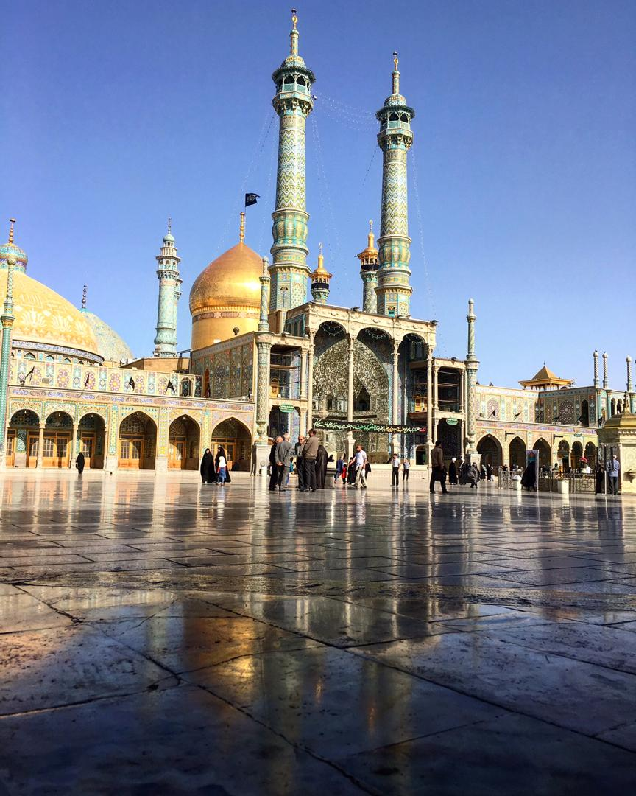

Sayeda Fatima bint Musa
Fātimah bint Mūsā' al-Kādhim, född 790, död 816, var dotter till den sjunde shiaimamen Musa al-Kazim och syster till den åttonde shiaimamen Ali ar-Rida. Fatimah var ett muslimskt helgon och välkänd berättare av hadith. Hon dog när hon var på resa till sin bror i Khorasan och är begravd i staden Qom.